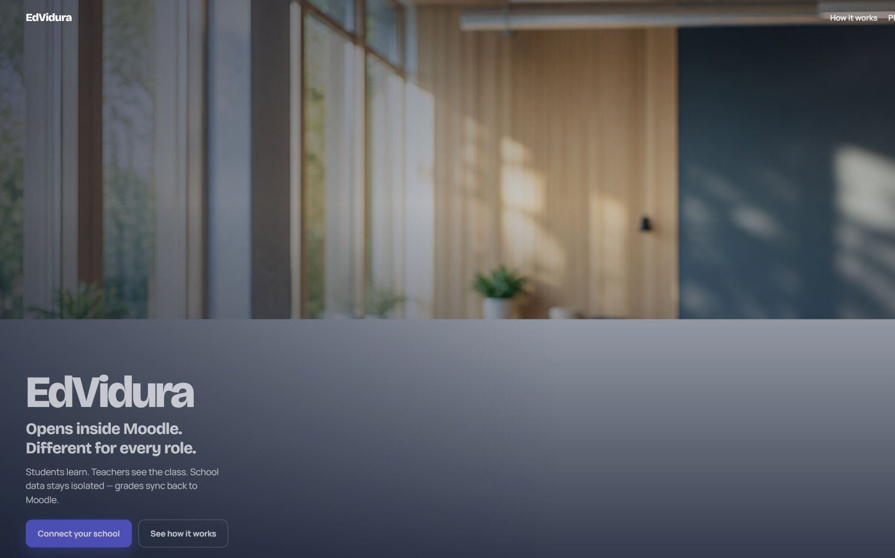
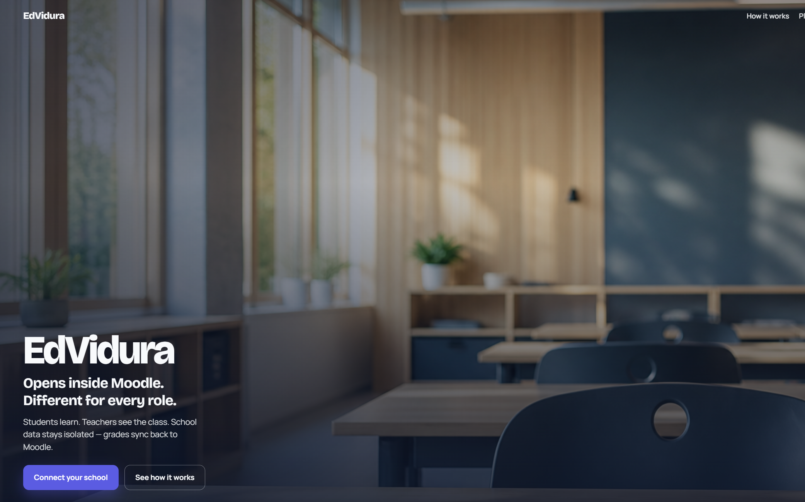
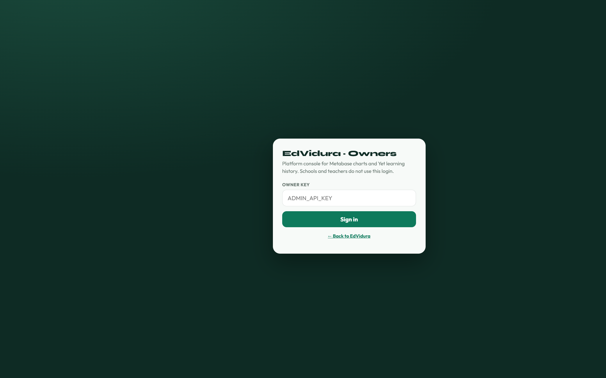
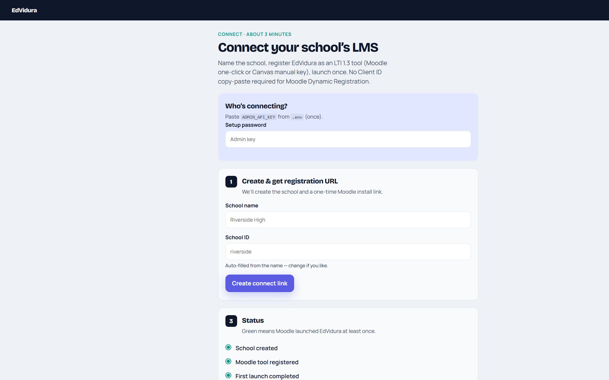

Source
Done checklist (13)
| Meeting | Requirement | Proof type |
|---|---|---|
| 17/07 | Moodle LTI 1.3 Integration | Screenshot + onboard LTI URLs |
| 17/07 | Onboarding APIs | Screenshot /onboard |
| 17/07 | PostgreSQL data isolation | Screenshot multi-tenant schools |
| 17/07 | 3Q Quiz UI / score / results | Record §A |
| 17/07 | AGS grade passback | Roadblock Record §A |
| 17/07 | Screen Design Ideas | Screenshot landing |
| 08/09 | Multi-tenancy | Screenshot riverside / lakeside |
| 08/09 | LTI authorization | Screenshot JWKS |
| 08/09 | Yet LRS + Metabase | Screenshot /ops owner login |
| 08/09 | AI-generated quizzes | Record §B |
| 08/09 | Coach voice (Indian languages) | Record §C |
| 08/09 | xAPI from chats | Record §C |
| 22/09 | Quiz multi-model parser (complexity / coverage / study plan) | Record §B |
1 · Production health

2 · Landing — LTI / isolation / design

3 · Owner console — Yet + Metabase

4 · Onboarding + multi-tenancy + LTI URLs

5 · LTI authorization — JWKS
JEV manager deck (animated HTML slides)
LearnWise → EdVidura deck (what we can do)
Requirements recordings deck (sheet Done)
requirements-recordings-deck.html · requirements-recordings-deck.pptx · video index
Detailed per-feature recordings (sheet Done rows)
videos/by-feature/index.html ·
catalog features.yaml ·
python scripts/record_feature_proofs.py --refresh-session
Agent walkthrough video (public surfaces)
videos/edvidura-done-public-walkthrough.mp4 · landing → health → onboard → ops → JWKS → this pack
Recording scripts (attach Loom links to the sheet)
§A — Quiz UI / results / AGS
- Launch EdVidura from Moodle.
- Take quiz → submit → show score, results, receipt.
- Show Moodle grade sync or narrate AGS roadblock honestly.
§B — AI quizzes + multi-model parser
- Teacher → AI tools: Level, Complexity, Full-book coverage.
- Optional: PDF/text quiz draft.
- Student quiz: show Level / Complexity / Coverage / Study plan cards.
§C — Coach voice + xAPI chats
- Ask Vidura → pick Indian language → ask class question.
- Show Mic/Speak if available.
- Show activity/xAPI evidence for the chat turn.